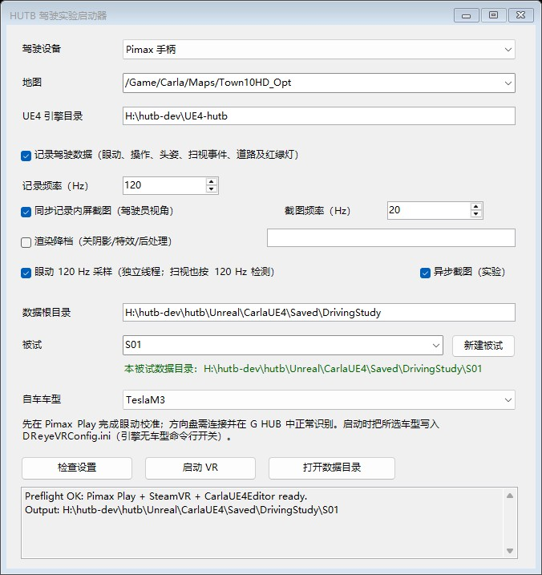
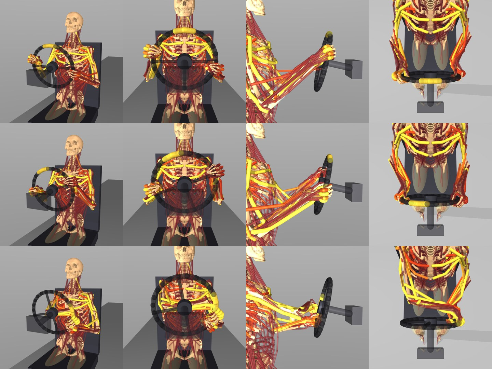
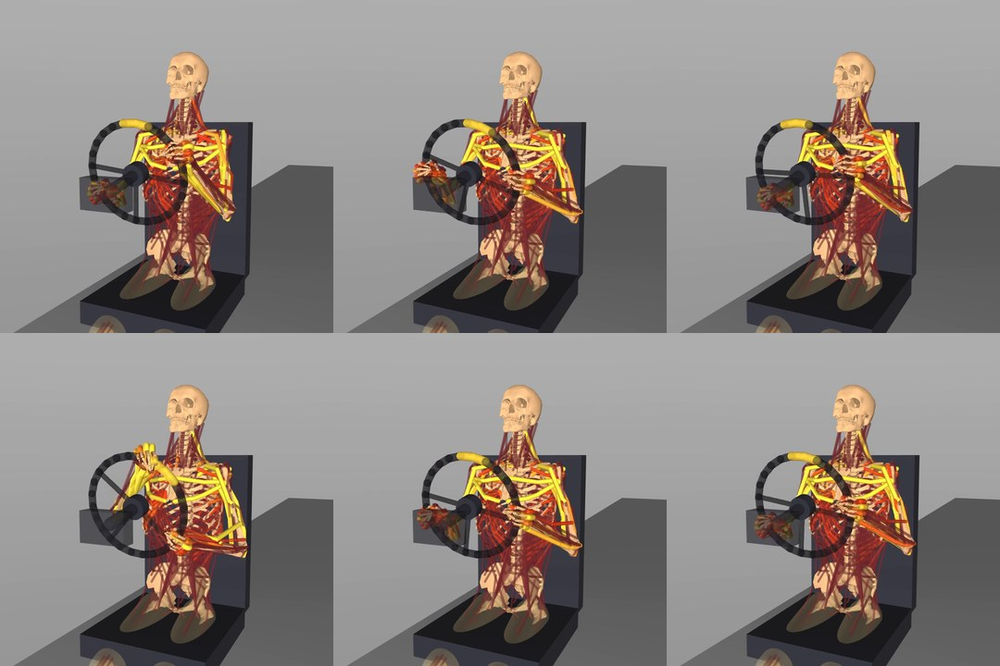

驾驶实验启动器与数据采集
快速开始
- 连接头显，在 Pimax Play 中启用眼动追踪并完成校准。若使用罗技 G29 / G920 / G923 方向盘，请先确认 Logitech G HUB 已识别设备，并在 Windows
joy.cpl中确认转向与踏板轴响应正常后关闭测试窗口。 - 在源码仓库根目录（支持
setup.bat -l生成的Build\engine与同级引擎目录自动识别，即使UE4_ROOT未设置或指向旧路径也可直接启动）或setup.bat -p打包产物根目录（WindowsNoEditor）中双击StartDrivingStudy.cmd。

上图为较早版本的启动器界面示意；最新版在眼动 120 Hz 采样与数据根目录之间新增了记录手柄位姿复选框。
- 选择驾驶设备（Pimax 手柄 或 罗技方向盘（G29 / G920 / G923））。源码模式下会自动填充UE4 引擎目录（
setup.bat -l或同级引擎目录，打包版会显示“打包版无需填写”并禁用输入框），并从工程目录自动发现已安装地图与自车车型。 -
如需采集实验数据，请勾选记录驾驶数据（眼动、操作、头姿、扫视事件、道路及红绿灯）。默认目标采样率为 120 Hz（轻量课堂实验可设为 20 Hz），填写或通过新建被试创建被试名称并确认数据根目录。可选开关包括：
- 同步记录内屏截图（驾驶员视角）：默认 20 Hz、640×480 JPEG；可勾选右侧异步截图（实验），使 GPU 回读与 JPEG 编码在独立线程执行，避免阻塞游戏主线程。
- 眼动 120 Hz 采样（独立线程；扫视也按 120 Hz 检测）：在后台专用线程按硬件原生频率轮询眼动仪，并在该 120 Hz 流上执行在线 I-VT 扫视事件检测。
- 记录手柄位姿（双手 6DoF + 扳机/握把，上肢数字人用）：默认关闭；开启后会在主表中填充额外的 18 列双手手柄位姿，供下方“肌肉骨骼上肢回放”驱动 MS-Human-700 模型使用。
- 渲染降档（关阴影/特效/后处理）：显式设置
sg.ShadowQuality 0、sg.EffectsQuality 0、sg.PostProcessQuality 0，右侧输入框支持附加自定义控制台变量；默认关闭，以保留现有画质与引擎配置。
-
先点击检查设置执行环境预检，确认通过后点击启动 VR。启动器将按顺序拉起 Pimax Play、SteamVR 与仿真器。
- 使用罗技方向盘时，正式开始记录前请先完整踩放一次油门与刹车踏板，使硬件完成踏板行程初始化。退出仿真器后，点击打开数据目录即可查看生成的 CSV 文件。
数据采集开关默认关闭。每次开始采集都会新建 <session>.csv（71 列；开启手柄位姿时为 89 列）与 <session>_gaze.csv（18 列），不会覆盖历史会话。默认输出根目录在源码构建下为 Unreal/CarlaUE4/Saved/DrivingStudy/，在打包版本下为 CarlaUE4/Saved/DrivingStudy/；只要填写了合法被试名且启用了数据采集或内屏截图，文件均保存至 <数据根目录>/<被试>/。重新加载地图或重新生成自车将开启新的会话文件。
当选择罗技方向盘模式时，VR 手柄与键盘不再控制转向、油门、刹车、换挡和转向灯（手柄仍可调整座舱视角/座椅位置）；当选择手柄模式时，方向盘驾驶轴输入会被忽略，键盘快捷键仍正常可用。在方向盘模式下若检测到方向盘断连或读取失败，系统会自动施加满刹车，并每 2 秒尝试原地重连。
如果方向盘无响应，请查看 Unreal/CarlaUE4/Saved/Logs/CarlaUE4.log：
Logitech SDK initialize: success：DirectInput / Logitech SDK 初始化成功。Found Logitech wheel：已打开受支持的方向盘设备。Logitech wheel sample：每 2 秒打印一次原始转向与踏板轴数值。
同时也支持命令行直接启动：
powershell -NoProfile -ExecutionPolicy Bypass -File .\StartPimaxVR.ps1 -UE4Root '<UE4 引擎根目录>' -Map /Game/Carla/Maps/Town10HD_Opt -InputDevice wheel -RecordDriving -RecordHz 120 -EyeThreadHz 120
- 手柄驾驶可传
-InputDevice controller；仅调试或驾驶不采集数据时省略-RecordDriving。 - 可传入
-RecordHz 20进行轻量级 20 Hz 采集，或传入-RecordDirectory <本地绝对路径>指定输出目录。 - 常用可选参数：
-ScreenshotDriving -ScreenshotHz 20（单独截图时同样支持-RecordDirectory）、-AsyncScreenshot、-EyeThreadHz 120、-HandPose、-PerfDowngrade。 - 若从
setup.bat -l或同级引擎目录运行，StartPimaxVR.ps1也会自动识别引擎目录，无需强制传入-UE4Root。
从源码编译需确保 CarlaUE4.uproject 中已启用 LogitechWheelPlugin 与 SteamVR 插件。
CSV 字段说明
1. 主驾驶表 <session>.csv（71 列，含手柄位姿时为 89 列）
每一行对应一个游戏线程采样点，整合了当前眼动追踪状态、视线射线命中结果、头显位姿、在线扫视指标、车辆运动学、驾驶输入、OpenDRIVE 道路定位与影响本车的信号灯状态。
| 列名 | 说明 |
|---|---|
schema_version |
CSV 结构版本（3；新增手柄位姿列之前为 2） |
ue_frame, sim_time_s, host_elapsed_s |
UE 帧号、仿真时间戳（秒）、录制开始以来的墙钟耗时（秒） |
eye_device_timestamp_ms |
眼动设备时间戳（毫秒）；使用设备硬件时钟而非仿真时间 |
input_mode, wheel_connected, autopilot |
所选驾驶模式（controller / wheel）、方向盘连接状态、自动驾驶状态 |
map, vehicle_id |
地图资产名与自车 CARLA Actor ID |
road_id, lane_id, road_s_m |
OpenDRIVE 道路 ID、车道 ID 与纵向 s 坐标（米） |
junction_id, in_junction |
OpenDRIVE 路口 ID 及是否位于路口内（1/0）；离开道路时为空 |
motion, yaw_rate_deg_s |
运动状态标签（stopped 静止、straight 直行、left 左转、right 右转；首行为 unknown）及横摆角速度（度/秒） |
red_light_stop_candidate |
当影响本车的信号灯为红灯且车速低于 1 km/h 时为 1（仅作红灯停车筛选辅助，不代表因果判定） |
traffic_light_id, traffic_light_state, traffic_light_distance_m |
影响本车的信号灯 ID、灯色状态及距灯杆距离（米）；离开触发区域时状态可能为 unknown |
vehicle_x_m, vehicle_y_m, vehicle_z_m, vehicle_yaw_deg, speed_kmh |
自车世界坐标（米）、航向角（度）与车速（km/h） |
steer_input, throttle_input, brake_input |
当前帧控制输入（转向在 [-1, 1]，油门/刹车在 [0, 1]，经工程输入缩放处理） |
previous_applied_steer, previous_applied_throttle, previous_applied_brake, previous_reverse |
当前帧输入刷入车辆之前，已生效的转向/油门/刹车控制量及倒挡状态 |
eye_source, gaze_valid |
眼动追踪后端（pimax_pvr、sranipal、dummy 等）及有效性标志（1/0；dummy 始终为无效） |
gaze_origin_x_m, gaze_origin_y_m, gaze_origin_z_m, gaze_dir_x, gaze_dir_y, gaze_dir_z |
世界坐标系下的注视射线起点（米）与单位方向向量 |
gaze_local_x, gaze_local_y, gaze_local_z |
相机局部坐标系下的注视单位方向向量（用于剥离头部转动与眼球转动） |
focus_hit, focus_actor_id, focus_actor_name, focus_kind |
注视射线是否命中场景对象（1/0），以及命中对象 ID、名称与语义类别 |
focus_x_m, focus_y_m, focus_z_m, focus_distance_m |
世界空间命中位置与距离（米）；focus_hit=0 时为空 |
focus_traffic_light_state, looking_at_affecting_light |
所注视信号灯的状态，以及所注视对象是否恰为当前影响本车的信号灯（1/0） |
head_x_m, head_y_m, head_z_m, head_pitch_deg, head_yaw_deg, head_roll_deg |
世界坐标系下头显相机位置（米）与姿态角（度） |
gaze_h_deg, gaze_v_deg |
合成水平注视角（atan2(Y, X)）与垂直注视角（atan2(Z, sqrt(X^2+Y^2))）（度） |
focus_actor_yaw_deg, focus_actor_pitch_deg, focus_actor_roll_deg |
被注视 Actor 的世界朝向（度）；focus_hit=0 时为空 |
gaze_velocity_deg_s, saccade_state, saccade_onset_s, saccade_amplitude_deg, saccade_peak_velocity_deg_s |
注视瞬时角速度（度/秒）、在线 I-VT 扫视状态（fixation / saccade）、扫视起始仿真时间（秒）、幅度（度）与峰值角速度（度/秒） |
sample_dt_ms |
与上一行记录之间的仿真时间间隔（毫秒） |
可选的手柄位姿列（18 列，命令行 -HandPose / 界面记录手柄位姿）
该组列位于 sample_dt_ms 之前，仅当 -DReyeVRHandPose 传入引擎（命令行 -HandPose 或图形界面勾选记录手柄位姿）时才会填入数值。未开启该开关时这 18 列同样保留表头但内容为空，因此文件总列数始终保持一致，只有“有值列数”随开关变化。
| 列名 | 说明 |
|---|---|
hand_l_valid, hand_r_valid |
本帧运行时报告该侧手柄位姿有效时为 1，否则为 0 |
hand_l_x_m, hand_l_y_m, hand_l_z_m, hand_r_x_m, hand_r_y_m, hand_r_z_m |
手柄（Grip）坐标系原点，OpenVR 站立追踪空间，单位：米 |
hand_l_pitch_deg, hand_l_yaw_deg, hand_l_roll_deg, hand_r_pitch_deg, hand_r_yaw_deg, hand_r_roll_deg |
直接从右手系 OpenVR 列基矩阵分解得到的内旋 Y(yaw)-X(pitch)-Z(roll) 欧拉角（度） |
hand_l_trigger, hand_r_trigger |
来自传统 OpenVR 轴数组 rAxis[0] 的扳机轴读数，标称范围 0..1 |
hand_l_grip, hand_r_grip |
来自 rAxis[1] 的握持/侧压轴读数，标称范围 0..1 |
分析前请务必阅读以下限制说明：
- 手柄位姿采用 OpenVR 站立追踪空间（单位：米），而非 UE / CARLA 世界坐标系。在不做显式坐标变换的情况下，不能直接与
head_*_m、vehicle_*_m或focus_*_m数值混用；同一段手部动作在 SteamVR 中重新校准中心或更换游玩区后，记录坐标也会相应变化。 trigger/grip读取自传统 OpenVR 轴数组（rAxis[0]、rAxis[1]）。在 Pimax Dream Air + SteamVR 下这两项当前读数为0.000，而未映射的轴（< -0.5）会写入空值；在将0.000判作“未按下”前，请先验证实际硬件读数是否随按键变化。- 不采集逐指关节角。 手柄仅上报刚体 6-DoF 位姿与两个标量轴，不包含单指弯曲角度；离线数字人回放中的手指抓握姿态需按固定抓握模型假设（见下方回放说明）。
- 当
hand_*_valid=0、未勾选开关或非 VR 模式运行时，上述列保持为空。
2. 高频眼动流表 <session>_gaze.csv（18 列）
在眼动仪原生采样时间网格上连续写入，并附带闭合后的扫视事件判定结果：
| 列名 | 说明 |
|---|---|
device_time_ms, host_recv_s, sim_time_s, ue_frame |
眼动设备时间戳（毫秒）、主机接收时间（秒）、仿真时间（秒）及 UE 帧号 |
comb_h_deg, comb_v_deg, l_h_deg, l_v_deg, r_h_deg, r_v_deg |
双目融合（Cyclopean）水平/垂直视线角（度）及运行时上报的左右眼字段（在 Pimax PVR 1.33.1 下，l_* 与 r_* 实为基于融合视线附加固定 4.0000 度水平偏置的合成值，分析时请以 comb_h_deg / comb_v_deg 为准） |
vergence_deg, valid |
左右射线夹角（度；Pimax PVR 下同样为合成值，请勿用于真实辐辏研究）及采样有效标志（1/0） |
gaze_vel_deg_s, saccade_state |
瞬时注视角速度（度/秒）与闭合事件判定（fixation 注视、saccade 扫视、rejected 已剔除，或 saccade_open 未闭合扫视） |
saccade_onset_s, saccade_amp_deg, saccade_peak_deg_s, saccade_samples |
闭合扫视事件的起始时间（秒）、幅度（度）、峰值角速度（度/秒）及样本数（同一闭合事件所属各行数值一致） |
除可选的 hand_* 数据块（OpenVR 追踪空间，米）外，所有空间坐标均遵循 UE / CARLA 左手坐标系（X 向前、Y 向右、Z 向上），并兼容大地图原点偏移。当 gaze_valid=0 时，车辆与道路相关列仍照常记录，而视线与注视命中坐标保持为空。
肌肉骨骼上肢回放
采录得到的 hand_* 位姿可用于离线驱动肌肉骨骼上肢数字人：Util/HandPose/record_hands.py 可在不启动仿真器的情况下直接采集手柄与头显位姿；Util/HandPose/replay_arms.py 则将 CSV 通过 MuJoCo 的 MS-Human-700 模型进行上肢回放，结合解剖学耦合逆运动学（IK）、方向盘几何与转角（steer_input）、手柄外壳-握环偏置补偿，以及逆动力学估算的肌肉激活着色，导出 MP4 视频与首/中/末关键帧图像（通过 setup.bat -p 构建的发布包也会自动包含 Util/HandPose/）。实时 VR 驾驶员角色（ADReyeVRPawn）与 replay_arms.py 共用同一套一次性自动标定器（FDReyeVRAutoCalibrator）：头部连续保持静止 >= 5 s（位移 < 5 cm、旋转 < 6 deg）后，转动方向盘幅度达到 >= 0.015（在 900 度方向盘上约 6.8 deg）即自动完成标定，实验过程中无需被试手动触发 VR 重中心或手部校准。环境安装、命令行参数（--start、--fit、--raw-hands、--no-muscle）以及已知限制（手指保持预设握姿不随帧活动、坐姿下肢固定、肌肉激活由逆动力学模型推算而非实测 EMG、默认开启手柄外壳偏置补偿与 --raw-hands 的差异、以及手臂可达球面夹紧）详见 Util/HandPose/README.md。
多视角握持贴合与逆动力学肌肉激活效果如下（正面、侧面、座舱斜视与俯视交叉转向）：

连续转向过程中的时序回放序列与肌肉激活变化如下：

实际回放视频效果：
筛选查询示例
- 转弯注视分配分析：筛选
in_junction=1、motion为left/right且gaze_valid=1的行，关联分析steer_input、gaze_local_*、head_yaw_deg与focus_*。 - 红灯制动行为分析：筛选
red_light_stop_candidate=1的行并按traffic_light_id分组，跟踪throttle_input、brake_input与focus_*随sim_time_s的变化趋势。
性能与验证
<session>.csv默认目标采样率为 120 Hz（每渲染帧至多采样一次，低帧率时不插值；可下调至 20 Hz）。启用-EyeThreadHz 120后，<session>_gaze.csv在独立 120 Hz 线程轮询眼动仪并执行经过实机标定的 I-VT 算法（起始阈值120 deg/s、结束阈值60 deg/s、最小持续时间20 ms）。仿真暂停期间不写入数据。- CSV 写入器使用带缓冲的 I/O（每秒及会话结束时刷盘）；若磁盘写入失败，录制将安全停止并在日志中输出
Driving study: write failed。
开发者自测命令（在源码仓库根目录执行；若使用 setup.bat -l 生成的 Build\engine 或已设置有效 UE4_ROOT，-UE4Root 可省略）：
powershell -NoProfile -ExecutionPolicy Bypass -File .\Util\Tests\RunPimaxTests.ps1
powershell -NoProfile -ExecutionPolicy Bypass -File .\Util\Tests\TestPimaxLauncher.ps1
powershell -NoProfile -STA -ExecutionPolicy Bypass -File .\StartDrivingStudy.ps1 -ValidateOnly
Windows 统一回归测试可通过 make check.vr（即 Util\BuildTools\Check.bat --vr）触发，除 VR 场景测试外，还会检查源码与打包目录的启动器脚本与 UI、预检测试、Util\HandPose\*.py 语法及 HUTB.* C++ 自动化测试。